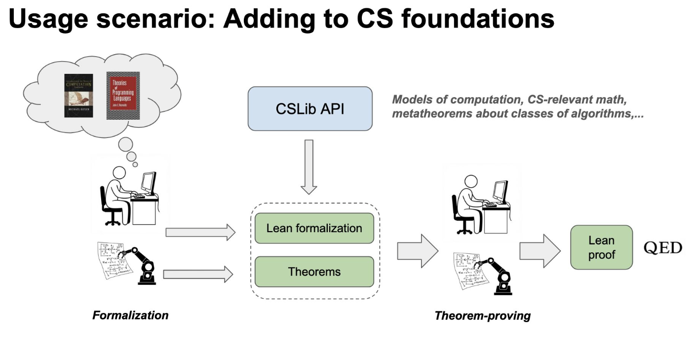

From Decision Procedures to
Proof Automation in Lean

About Lean
- Lean is an open-source programming language and proof assistant that is transforming how we approach mathematics, software verification, and AI.
- Lean and its tooling are implemented in Lean. Lean is very extensible.
- LSP, Parser, Macro System, Elaborator, Type Checker, Tactic Framework, Proof Automation, Compiler, Build System.
- Lean has a small trusted kernel; proofs can be exported and independently checked.
- The Lean FRO is a nonprofit dedicated to developing Lean.
- lean-lang.org
The Verification Spectrum
- Testing: finds bugs, can't prove absence of bugs.
- Model checking: exhaustive for finite-state systems.
- SMT: automatic for decidable theories (SAT, QF_LIA, QF_BV, arrays, ...). Returns sat/unsat/unknown. You know this from CS257!
- Interactive theorem proving (ITP): works for arbitrary mathematical statements. Produces proof objects, independently checkable certificates.
- Key insight: these approaches are complementary, not competing. Decision procedures become tactics inside a proof assistant.
What SMT Solvers Do Well
- You've studied these in CS257:
- SAT: DPLL, CDCL, conflict analysis, learned clauses
- DPLL(T): SAT solver + theory solvers cooperating
- Theories: QF_LIA, QF_BV, arrays, equality + uninterpreted functions
- Quantifier elimination: Cooper's algorithm for Presburger arithmetic
These are powerful and fully automatic. For their decidable fragments, they're the best tool.
Will AI Make This Obsolete?
- Decision procedures make reasoning free. Sound, complete, predictable for their fragment. No hallucinations, no retries.
- There is no point using AI to normalize arithmetic expressions, do Gaussian elimination, or factor polynomials. AI can do these, but less efficiently and less reliably. It is like using AI to multiply big numbers.
- Low-level heuristic reasoning won't disappear either. SAT solvers grind through massive problems. When a problem is converted to SAT, the high-level structure has been obfuscated. Some problems are inherently combinatorial. You need to grind.
Where AI Changes the Game
- High-level reasoning in undecidable fragments: this is where AI shines. AI can simulate the high-level intuitions humans use when proving non-trivial theorems. It has already solved problems beyond the reach of SMT solvers and ITP (IMO 2024, 2025).
- The Z3 quantifier problem: Z3 users proudly report that Z3 instantiated millions of quantifiers to solve a problem. But the problem is often simple, and comes from software verification. Z3 is instantiating a huge number of useless facts. Only a handful are actually used in the proof. AI could select the right instantiations.
- More broadly: lemma selection, high-level proof search strategy. All places where human-like intuition beats brute force.
Why a Programming Language + Proof Assistant?
- SMT solvers are proof automation tools. They provide a collection of decision procedures. Fast and automatic, but limited in expressiveness.
- Lean is a modeling and programming tool. It is more expressive, and enables users to build formal libraries with rich structure.
- Programming language infrastructure: Build system, IDE support, package manager, compiler, the same tools you expect from modern programming languages.
- Composability: Build trustworthy tools like verification condition generators. Glue components together. Prove they are correct.
- Decision procedures become tactics: The same algorithms you study in CS257, running inside Lean, producing proof objects.
Lean Is Based on Dependent Type Theory
A small example:
def odd (n : Nat) := ∃ k, n = 2 * k + 1Lean checks this definition: odd maps a natural number to a proposition.
The type of odd 3 is Prop, a statement that can be true or false.
-- We can evaluate:
#eval odd 3 -- This doesn't work! odd returns a Prop, not a Bool.
-- But we can prove it:
example : odd 3 := ⟨1, rfl⟩ -- witness: k = 1, and 3 = 2*1 + 1Our First Theorem
Theorem statement:
theorem odd_add_odd (h1 : odd m) (h2 : odd n)
: even (m + n) := by
obtain ⟨k1, _⟩ := h1
obtain ⟨k2, _⟩ := h2
exact ⟨k1 + k2 + 1, by ring⟩An incorrect proof (Lean rejects it):
theorem odd_add_odd' (h1 : odd m) (h2 : odd n)
: even (m + n) := by
obtain ⟨k1, _⟩ := h1
obtain ⟨k2, _⟩ := h2
exact ⟨k1 + k2, by ring⟩
-- Error: ring failed to prove
-- 2 * k1 + 1 + (2 * k2 + 1)
-- = 2 * (k1 + k2)Lean catches the mistake immediately: the witness is wrong.
AI + Decision Procedures = The Winning Combination
- AI navigates the search space: selects lemmas, chooses proof strategies, handles the creative steps in undecidable fragments.
- Decision procedures close the goals: once AI reduces a subgoal to linear arithmetic, bit-vectors, or ground equalities, the tactic finishes it reliably. No hallucinations, no retries.
- Better tactics → better AI. When a decision procedure closes a goal in one step instead of fifty, the AI's search tree shrinks dramatically. Compact proofs = better training data = better AI provers.
omega, bv_decide, grind) are the calculator for proofs.
Curry–Howard Correspondence
The deep connection between logic and programming:
- Types are propositions.
P : Prop - Programs (terms) are proofs.
h : Pmeanshis a proof ofP. - Function types are implications.
P → Q= "given a proof of P, produce a proof of Q". - Dependent function types are universal quantifiers.
(n : Nat) → P n= "for all n, P(n) holds". - Inductive types are logical connectives.
And P Q,Or P Q,Exists, etc.
Dependent Types in Action
-- Types can depend on values
def Vector (α : Type) (n : Nat) := { a : Array α // a.size = n }
-- The type system prevents out-of-bounds access
def Vector.get (v : Vector α n) (i : Fin n) : α :=
v.val[i] -- Lean knows i < n = v.val.size
-- Propositions are types, proofs are terms
example : 2 + 2 = 4 := rfl -- definitional equality
example : ∀ n : Nat, 0 + n = n := fun n => rfl -- a function is a proof of ∀
-- Dependent pairs: the type of the second component depends on the first
example : (n : Nat) × Vector String n :=
⟨3, ⟨#["a", "b", "c"], rfl⟩⟩SAT Certificates vs Proof Objects
LRAT Certificate (SAT)
- SAT solver produces a resolution proof
- LRAT format: sequence of clause additions with hints
- Checked by a simple, verified checker
- Works for propositional logic (SAT)
Lean Proof Term
- Tactic produces a term in dependent type theory
- Checked by Lean's kernel (type checker)
- Works for any statement expressible in Lean
- Proofs compose: combine results from different tactics
Why This Matters Beyond This Course
- AI + Formal Proofs: AlphaProof (Google DeepMind) won silver at IMO 2024 using Lean. At IMO 2025, Harmonic achieved gold and ByteDance's SEED Prover achieved silver, both using Lean. Three independent teams, same foundation.
- Software verification at scale: Cedar (AWS), SampCert (differential privacy), SymCrypt (Microsoft), all verified in Lean.
- "Vibe proving": LLMs (Claude, GPT, Gemini) can write Lean proofs. But the kernel still checks everything. You can't fake a proof.
Lean Is an IDE for Formal Verification
- Rich user interface and integrated tooling.
- Build system (Lake), LSP server, and VS Code plugin work seamlessly together.
- Real-time feedback: errors, goals, and hints as you type.
- The math community using Lean is growing rapidly.
- Lean is used in several software verification projects at AWS since 2023.
theorem add_comm (n m : Nat) : n + m = m + n := by
induction n with
| zero => simp
| succ n ih =>
simp [Nat.succ_add, ih]
▲ cursor hereThe Lean Infoview panel shows goals, types, and diagnostics in real time.
Theorem Proving in Lean Is an Interactive Game
"You have written my favorite computer game" – Kevin Buzzard
The "game board": you see goals and hypotheses, then apply "moves" (tactics).
theorem odd_add_odd
(h1 : odd m) (h2 : odd n)
: even (m + n) := by
done -- ← cursor hereThe goal ⊢ even (m + n) is what we need to prove.
Each tactic transforms the goal until nothing remains.
A "Game Move" aka Tactic
The obtain tactic destructs an existential hypothesis:
theorem odd_add_odd
(h1 : odd m) (h2 : odd n)
: even (m + n) := by
obtain ⟨k1, _⟩ := h1
obtain ⟨k2, _⟩ := h2
done -- ← cursor hereAfter two obtain moves, the hypotheses are unpacked
and the goal is simplified.
The simp Move
The simplifier, one of the most popular moves in our game. Rewrites the goal using a database of lemmas:
-- simp can solve many routine goals:
example (xs : List α) : (xs ++ []).length = xs.length := by simp
example (n : Nat) : n + 0 = n := by simp
-- simp? tells you which lemmas it used:
example (xs : List α) : (xs ++ []).length = xs.length := by
simp? -- Try this: simp [List.append_nil]Proving Existentials: use and exact
-- "use" provides a witness for an existential goal
example : ∃ n : Nat, n > 3 := by
use 4 -- now the goal is: 4 > 3
-- "exact" provides the exact proof term
example : ∃ n : Nat, n > 3 := by
use 4
exact Nat.lt_of_sub_eq_succ rfl
-- "decide" is proof by evaluation
example : ∃ n : Nat, n > 3 := by
use 4
decide
-- Or combine them:
example : ∃ n : Nat, n > 3 := ⟨4, by decide⟩The linarith Move
Linear arithmetic. Closes goals about linear inequalities:
-- linarith combines linear hypotheses to derive the goal
example (x y z : Int) (h1 : x + y ≥ 3) (h2 : y + z ≤ 5)
(h3 : x ≥ 0) : x + 2*y + z ≤ x + 8 := by
linarith
-- It works with naturals, integers, and rationals
example (a b : Nat) (h : a ≤ b) : 2 * a ≤ 2 * b := by
linarithlinarith finds a non-negative linear combination of hypotheses
that contradicts the negation of the goal. Same idea as Farkas' lemma.
Lean Syntax: Types and Functions
Just enough syntax to read the code in this talk:
-- Inductive types (algebraic data types)
inductive Weekday where
| monday | tuesday | wednesday
| thursday | friday
| saturday | sunday
-- Pattern matching
def Weekday.isWeekend : Weekday → Bool
| .saturday => true
| .sunday => true
| _ => false
-- Recursive types
inductive MyList (α : Type) where
| nil : MyList α
| cons : α → MyList α → MyList α-- Functions with type annotations
def double (n : Nat) : Nat := n * 2
-- Anonymous functions
#eval (fun x => x + 1) 5 -- 6
-- Structures (like records)
structure Point where
x : Float
y : Float
-- Dependent types: length-indexed vectors
inductive Vec (α : Type) : Nat → Type where
| nil : Vec α 0
| cons : α → Vec α n → Vec α (n + 1)Lean Syntax: Propositions and Proofs
-- Prop vs Bool
-- Bool: computed (true/false)
-- Prop: proved (constructive evidence)
-- theorem: a named proof
theorem add_comm (a b : Nat) :
a + b = b + a := by
omega -- decision procedure!
-- example: an unnamed proof
example : 2 + 3 = 5 := by decide
-- by: enter tactic mode
-- Tactics transform proof goals
-- until no goals remain-- Tactic mode example
theorem and_swap (p q : Prop)
(h : p ∧ q) : q ∧ p := by
-- Goal: q ∧ p
obtain ⟨hp, hq⟩ := h
-- Goals: q, p
exact ⟨hq, hp⟩
-- Term-mode proof (no tactics)
theorem and_swap' (p q : Prop)
(h : p ∧ q) : q ∧ p :=
⟨h.2, h.1⟩
-- Mix both styles freely!A Verified Function: append
-- Define List append
def append : (xs ys : List α) → List α
| [], bs => bs
| a :: as, bs => a :: append as bs
theorem append_assoc (as bs cs : List α)
: append (append as bs) cs = append as (append bs cs) := by
induction as with
| nil => rfl
| cons a as ih => simp [ih, append]Why Is Proof Automation Hard in Lean?
Dependent types: more expressive, but harder to automate.
def Array.get {α : Type u} (as : Array α) (i : Nat) (h : i < as.size) : α- The return type can depend on values, not just types.
- Suppose we want to rewrite
2 + i - 1toi + 1insideArray.get as (2+i-1) h. - We can prove
2 + i - 1 = i + 1, but naively substituting produces a type-incorrect term: the proofhhas type2+i-1 < as.size, noti+1 < as.size. - Lean generates custom congruence theorems that "patch" the proof term.
This kind of bookkeeping is invisible in SMT (no dependent types), but pervasive in Lean.
Type Classes: Ad-Hoc Polymorphism at Scale
- Type classes let you write generic code. The compiler resolves the right implementation:
class Mul (α : Type u) where mul : α → α → α
instance : Mul Nat where mul := Nat.mul
instance : Mul Int where mul := Int.mul
-- n * n resolves to Nat.mul; i * i resolves to Int.mul- Approx. 1,500 classes and 20,000 instances in Mathlib.
- Type class resolution is backward chaining: instances are Horn clauses. Lean uses tabled resolution.
- Proof automation must detect that different synthesized instances are definitionally equal.
-- An instance can depend on other instances (backward chaining):
instance [Semiring α] [AddRightCancel α] [NoNatZeroDivisors α]
: NoNatZeroDivisors (OfSemiring.Q α) where ...The Lean Ecosystem for Automation
The Lean community is actively developing proof automation:
- LeanHammer: Combines multiple proof search and reconstruction techniques. (CMU)
- Duper: Superposition theorem prover written in Lean for proof reconstruction.
- lean-smt: SMT tactic using CVC5 (UFMG, Stanford, Iowa). More on this later!
- lean-auto: Interface between Lean and automated provers. (CMU/Stanford)
- bv_decide: Fastest verified bit-blaster. Uses CaDiCaL SAT solver.
- grind: SMT-inspired tactic, native to dependent type theory.
The Tactics You Know
Decision procedures from this course appear as Lean tactics
bv_decide: An Efficient Verified Bit-Blaster
- Developed primarily by Henrik Böving (Lean FRO).
- Based on a verified LRAT proof checker by Josh Clune (AWS intern).
- Uses LRAT proof-producing SAT solver: CaDiCaL.
Entirely implemented in Lean. The LRAT checker is verified, so bugs in CaDiCaL can't produce false proofs.
bv_decide?: The "Try" Pattern
Many tactics implement this: simp?, aesop?, grind?, bv_decide?
theorem simple (x : BitVec 64) : x + x = 2 * x := by
bv_decide?
-- Quick Fix: Try this: bv_check "Arith.lean-simple-43-2.lrat"bv_decide?runs the SAT solver, saves the LRAT proof to a file.bv_checkreplays the saved proof. Fast, no SAT solver needed at build time.- This is the search/check separation: expensive search once, cheap replay forever.
"Blasting" popcount with bv_decide
Imperative popcount (Hacker's Delight):
def popcount : Stmt := imp {
x := x - ((x >>> 1) &&& 0x55555555);
x := (x &&& 0x33333333)
+ ((x >>> 2) &&& 0x33333333);
x := (x + (x >>> 4)) &&& 0x0F0F0F0F;
x := x + (x >>> 8);
x := x + (x >>> 16);
x := x &&& 0x0000003F;
}Specification (loop-based):
def pop_spec (x : BitVec 32) : BitVec 32 :=
go x 0 32
where
go (x : BitVec 32) (pop : BitVec 32) (i : Nat) : BitVec 32 :=
match i with
| 0 => pop
| i + 1 =>
let pop := pop + (x &&& 1#32)
go (x >>> 1#32) pop itheorem popcount_correct : ∀ x, run popcount x = pop_spec x := by
simp [run, popcount, Expr.eval, Expr.BindOp.app]
bv_decideomega: Cooper's Algorithm as a Lean Tactic
- Implements a variant of Cooper's algorithm. You just learned this in CS257!
- Quantifier-free Presburger arithmetic. Works on
Nat,Int,Fin,UInt,BitVec. Completely verified.
example (a b : Nat) (h : a ≤ b) : a + (b - a) = b := by omega
example (x y : Int) (h1 : x + y ≥ 3) (h2 : x ≤ 1) : y ≥ 2 := by omega
example (n : Nat) (h : n % 2 = 0) : (n + 2) % 2 = 0 := by omega
example (a : Fin 10) : a.val < 10 := by omegaomega is a standalone tactic, but grind subsumes it:
grind's cutsat solver handles linear integer arithmetic as one of its satellite engines.
Same core ideas from Cooper (case splits, bounds propagation), integrated into the E-graph.
What Is grind?
- New proof automation (Lean v4.22) developed by Kim Morrison and myself.
- A proof-automation tactic inspired by modern SMT solvers. Think of it as a virtual whiteboard:
- Discovers new equalities, inequalities, etc.
- Writes facts on the board and merges equivalent terms
- Multiple engines cooperate on the same workspace
- Cooperating Engines: Congruence closure, E-matching, Constraint propagation, Guided case analysis
- Satellite solvers: linear integer arithmetic (cutsat), commutative rings, linear arithmetic
- Supports dependent types, type-class system, and dependent pattern matching.
- Produces ordinary Lean proof terms for every fact.
What grind Is NOT
- Not designed for combinatorially explosive search spaces:
- Large-n pigeonhole instances
- Graph-coloring reductions
- High-order N-queens boards
- 200-variable Sudoku with Boolean constraints
- Why? These require thousands/millions of case-splits that overwhelm grind's branching search.
- Key takeaway: grind excels at cooperative reasoning with multiple engines, but struggles with brute-force combinatorial problems.
- For massive case-analysis, use
bv_decide.
grind: Design Principles
- Native to Dependent Type Theory: No translation to first-order or higher-order logic needed.
- Solves trivial goals automatically.
- Fast startup time: No server startup, no external tool dependencies, no translations. Great for software verification applications.
- Rich diagnostics: When it fails, it tells you why.
- Configurable via Type Classes.
- Extensible: Users can plug in their own theory solvers.
- Stdlib and Mathlib pre-annotated.
- Provides
grind?similarly tobv_decide?andaesop?.
grind: Architecture
- Preprocessing: normalization, canonicalization, extracting nested proofs, hash-consing
- Internalization: converting Lean expressions into the solver's internal data structures
- E-graph: congruence closure, E-matching, constraint propagation
- Satellite Solvers: cutsat, commutative rings, linear arithmetic
The E-graph is the central data structure. Satellite solvers read from it and propagate back.
grind: Model-Based Theory Solvers
For linear arithmetic (linarith) and linear integer arithmetic (cutsat).
linarithis parametrized by a Module over the integers. Supports preorders, partial orders, and linear orders.cutsatis parametrized by theToInttype class, which embeds types likeInt32,BitVec 64into the integers.
example {R} [OrderedVectorSpace R] (x y z : R)
: x ≤ 2•y → y < z → x < 2•z := by
grindgrind: cutsat in Action
example (x y : Int) :
27 ≤ 11*x + 13*y → 11*x + 13*y ≤ 45 →
-10 ≤ 7*x - 9*y → 7*x - 9*y ≤ 4 → False := by
grind
example (a b c : UInt32) :
- a + - c > 1 →
a + 2*b = 0 →
- c + 2*b = 0 → False := by
grind
example (a : Fin 4) : 1 < a → a ≠ 2 → a ≠ 3 → False := by grindcutsat handles integers, fixed-width integers, and finite types uniformly
via the ToInt type class.
grind: Commutative Rings and Fields
Uses Gröbner basis. Parametrized by: CommRing, CommSemiring,
NoNatZeroDivisors, Field, AddRightCancel, IsCharP.
example {α} [CommRing α] (a b c : α)
: a + b + c = 3 →
a^2 + b^2 + c^2 = 5 →
a^3 + b^3 + c^3 = 7 →
a^4 + b^4 + c^4 = 9 := by
grind
example [Field R] (a : R) : (2 * a)⁻¹ = a⁻¹ / 2 := by grind
example [Field R] (a : R) : (2 : R) ≠ 0 →
1 / a + 1 / (2 * a) = 3 / (2 * a) := by grind
example [Field R] [IsCharP R 0] (a : R) :
1 / a + 1 / (2 * a) = 3 / (2 * a) := by grind
-- BitVec 8 is a CommRing of characteristic 256
-- No bitvector-specific theory needed!
example (x : BitVec 8) : (x - 16) * (x + 16) = x^2 := by grind
example (x y : BitVec 16) : x^2*y = 1 → x*y^2 = y → y*x = 1 := by grindgrind: Theory Combination
Satellite solvers share information through the E-graph. When one solver discovers an equality, all solvers see it.
example [CommRing α] [NoNatZeroDivisors α]
(a b c : α) (f : α → Nat) :
a + b + c = 3 → a^2 + b^2 + c^2 = 5 → a^3 + b^3 + c^3 = 7 →
f (a^4 + b^4) + f (9 - c^4) ≠ 1 := by grindThree solvers cooperate:
- Ring solver derives
a^4 + b^4 = 9 - c^4 - Congruence closure deduces
f (a^4 + b^4) = f (9 - c^4) - Linear integer arithmetic closes
2 * f (9 - c^4) ≠ 1
grind: E-Matching
E-matching is a heuristic for instantiating universally quantified lemmas. It is used in many SMT solvers. You know this from DPLL(T)!
Matching modulo the equalities in the E-graph:
-- Annotate a lemma for E-matching:
@[grind =] theorem fg {x} : f (g x) = x := by
unfold f g; omega
-- grind finds the right instantiation via E-matching:
example {a b c} : f a = b → a = g c → b = c := by
grindf (g ?x) in the E-graph,
even when the match requires following equality chains.
grind: Annotations and Forward Reasoning
Library authors annotate theorems to control how grind uses them:
[grind =]use left-hand side as E-matching pattern[grind _=_]use both sides[grind →]forward reasoning: extract patterns from hypotheses[grind ←]backward reasoning: extract patterns from conclusion[grind]automatic pattern selection
def R : Nat → Nat → Prop
@[grind →] theorem Rtrans : R x y → R y z → R x z
@[grind →] theorem Rsymm : R x y → R y x
-- grind chains transitivity and symmetry automatically:
example : R a b → R c b → R d c → R a d := by grindgrind: Extensibility
- Configure grind using type classes.
- Annotate theorems and definitions with the
[grind]attribute. - grind is implemented in Lean. You can extend it using Lean itself.
- No need to learn another programming language or create shared objects.
-- Annotate a lemma for grind:
@[grind =]
theorem getElem?_cons {a l i} : (a :: l)[i]? = if i = 0 then some a else l[i-1]? := by
cases i <;> simp
-- Now grind can use this lemma automatically in any proof about list indexing.grind: Diagnostics at Your Fingertips
When grind fails, it tells you why. Example:
example {α} (as bs cs : Array α)
(v₁ v₂ : α) (i₁ i₂ j : Nat)
(h₁ : i₁ < as.size)
(h₂ : bs = as.set i₁ v₁)
(h₃ : i₂ < bs.size)
(h₄ : cs = bs.set i₂ v₂)
(h₅ : i₁ ≠ j)
(h₆ : j < cs.size)
(h₇ : j < as.size)
: cs[j] = as[j] := by
grind- The diagnostics also show which E-matching lemmas were instantiated and how many times.
- If grind fails, you can see exactly what it tried and what's missing.
- Often the fix is: add a
[grind]annotation to the missing lemma.
grind: Interactive Mode
grind => exposes a DSL for stepping through the solver's execution.
Mix grind steps with ordinary tactics.
example : (cos x + sin x)^2 = 2 * cos x * sin x + 1 := by
grind =>
instantiate only [trig_identity]
ringgrind?outputs a self-contained script with the exact steps used. It does not depend on environment annotations, improving proof stability.- Users can invoke individual solver steps, trigger E-matching, perform case splits, inspect equivalence classes.
Connection to DPLL(T)
grind's architecture mirrors the DPLL(T) framework you studied:
DPLL(T) (from CS257)
- Core SAT engine: decisions + BCP
- Theory solvers: check consistency
- Theory propagation
- Backjumping + conflict analysis
- Theories: EUF, LIA, arrays, BV
grind in Lean
- Case splitting + constraint propagation
- Satellite solvers: check consistency
- E-graph propagation
- Backjumping
- Solvers: CC, cutsat, rings, linarith
lean-smt: Invoking CVC5 from Lean
- Developed at Stanford, UFMG, and University of Iowa.
- Translates Lean goals to SMT-LIB, calls CVC5, reconstructs the proof in Lean.
import Smt
-- lean-smt translates the goal to SMT-LIB and calls CVC5
example (a b c : Int) (h1 : a + b > c)
(h2 : c > a) : b > 0 := by
smt [h1, h2]
-- It handles quantifiers too
example : ∀ x : Int, x * x ≥ 0 := by
smtPutting It All Together
The if-normalization challenge
The Challenge (Leino, Merz, and Shankar)
- Normalize if-then-else expressions over Boolean variables.
- The normalized expression must satisfy four conditions:
- No nested ifs in the condition position
- No constant conditions (
if true then ...) - No redundant ifs (same then/else branch)
- Each variable evaluated at most once on any path
- The normalized expression must preserve semantics:
eval(normalize(e)) = eval(e) - This is a well-known verification challenge. Leino, Merz, and Shankar are names you may know from this field.
- Kim Morrison wrote this up beautifully in the Lean reference manual.
The IfExpr Type
inductive IfExpr
| lit : Bool → IfExpr -- constant: true or false
| var : Nat → IfExpr -- variable: x₀, x₁, x₂, ...
| ite : IfExpr → IfExpr → IfExpr → IfExpr -- if i then t else e
deriving DecidableEq
namespace IfExprdef eval (f : Nat → Bool) : IfExpr → Bool
| lit b => b
| var i => f i
| ite i t e => bif i.eval f then t.eval f else e.eval fSimple inductive type with three constructors. eval gives the semantics.
The Predicates: hasNestedIf, hasConstantIf
def hasNestedIf : IfExpr → Bool
| lit _ => false
| var _ => false
| ite (ite _ _ _) _ _ => true -- nested if in condition!
| ite _ t e => t.hasNestedIf || e.hasNestedIf
def hasConstantIf : IfExpr → Bool
| lit _ => false
| var _ => false
| ite (lit _) _ _ => true -- constant condition!
| ite i t e => i.hasConstantIf || t.hasConstantIf || e.hasConstantIfThe Predicates: hasRedundantIf, disjoint
def hasRedundantIf : IfExpr → Bool
| lit _ => false
| var _ => false
| ite i t e => t == e || i.hasRedundantIf || t.hasRedundantIf || e.hasRedundantIf
def vars : IfExpr → List Nat
| lit _ => []
| var i => [i]
| ite i t e => i.vars ++ t.vars ++ e.vars
/-- Each variable evaluated at most once on any path -/
def disjoint : IfExpr → Bool
| lit _ => true
| var _ => true
| ite i t e =>
i.vars.disjoint t.vars && i.vars.disjoint e.vars
&& i.disjoint && t.disjoint && e.disjointThe normalized Predicate + eval
/-- Normalized: no nested, constant, or redundant ifs,
and each variable evaluated at most once. -/
def normalized (e : IfExpr) : Bool :=
!e.hasNestedIf && !e.hasConstantIf && !e.hasRedundantIf && e.disjointFour conditions combined into one predicate.
The challenge: construct a function Z such that:
-- The formal statement we need to inhabit:
{ Z : IfExpr → IfExpr // ∀ e, (Z e).normalized ∧ (Z e).eval = e.eval }Other Solutions
- Chris Hughes: Aesop-based proof, ~15 lines of manual proof + subtyping. Creative but complex.
- Wojciech Nawrocki: ~300 lines. Thorough but verbose.
- Multiple solutions in other proof assistants (Dafny, Coq, Isabelle, ACL2).
Can we do better with grind?
Yes. Dramatically.
The normalize Function
def normalize (assign : Std.HashMap Nat Bool) : IfExpr → IfExpr
| lit b => lit b
| var v =>
match assign[v]? with
| none => var v
| some b => lit b
| ite (lit true) t _ => normalize assign t
| ite (lit false) _ e => normalize assign e
| ite (ite a b c) t e => normalize assign (ite a (ite b t e) (ite c t e))
| ite (var v) t e =>
match assign[v]? with
| none =>
let t' := normalize (assign.insert v true) t
let e' := normalize (assign.insert v false) e
if t' = e' then t' else ite (var v) t' e'
| some b => normalize assign (ite (lit b) t e)
termination_by e => e.normSizeTermination Challenge
- Lean requires all functions to terminate (total functional programming).
- The recursive call for nested ifs grows the expression:
-- This case GROWS the expression:
| ite (ite a b c) t e => normalize assign (ite a (ite b t e) (ite c t e))
-- The condition gets simpler, but t and e are duplicated!- Lean can't see termination with the default structural recursion.
- Solution: a custom termination measure that weights the condition more.
@[simp] def normSize : IfExpr → Nat
| lit _ => 0
| var _ => 1
| .ite i t e => 2 * normSize i + max (normSize t) (normSize e) + 1
-- Add to normalize:
termination_by e => e.normSizeThe Specification
We need to prove three properties simultaneously:
theorem normalize_spec (assign : Std.HashMap Nat Bool) (e : IfExpr) :
(normalize assign e).normalized
∧ (∀ f, (normalize assign e).eval f = e.eval fun w => assign[w]?.getD (f w))
∧ ∀ v, v ∈ vars (normalize assign e) → ¬ v ∈ assign
:= by
???- normalized: The result satisfies all four conditions.
- eval-preserving: Semantics are unchanged (modulo the assignment).
- variable elimination: Assigned variables don't appear in the output.
- The function is recursive with a complex case structure. Many subcases, many recursive calls.
The Proof: One Line
theorem normalize_spec (assign : Std.HashMap Nat Bool) (e : IfExpr) :
(normalize assign e).normalized
∧ (∀ f, (normalize assign e).eval f = e.eval fun w => assign[w]?.getD (f w))
∧ ∀ v, v ∈ vars (normalize assign e) → ¬ v ∈ assign
:= by
fun_induction normalize with grind +localsfun_induction normalize: generates one subgoal per recursive case ofnormalize, with appropriate inductive hypotheses for each recursive call.grind +locals: unfolds all local definitions and puts all facts together. Congruence closure + E-matching + case splitting does the rest.- No manual case analysis. No algebra extensions. No explicit lemma applications.
What grind +locals Means
-- Instead of manually annotating each definition:
attribute [local grind] normalized hasNestedIf hasConstantIf
hasRedundantIf disjoint vars eval List.disjoint
-- The +locals flag tells grind to unfold all definitions
-- in the current file/section:
grind +locals
-- grind can then:
-- 1. Unfold normalized, hasNestedIf, etc. on each case
-- 2. Use congruence closure to reason about equalities
-- 3. Use E-matching to apply inductive hypotheses
-- 4. Case-split on Boolean conditions
-- 5. Use the HashMap lemmas from StdAll the decision procedure machinery from this course (case splitting, equality reasoning, arithmetic) working together on dependent types.
try? Finds It Too
theorem normalize_spec
(assign : Std.HashMap Nat Bool)
(e : IfExpr) :
(normalize assign e).normalized
∧ ... := by
try?try?is an interactive tactic suggestion tool.- It tries many different tactics, guesses induction principles, and is extensible.
- The automation is discoverable, not just powerful.
Robustness: Different Formulations
-- Change the variable-elimination condition:
-- Version 1: ¬ v ∈ assign
-- Version 2: assign.contains v = false
-- Version 3: assign[v]? = none
-- Same proof works for ALL THREE formulations!
-- grind doesn't care about the surface syntax,
-- it reasons about the underlying semantics.grind proofs are robust because grind reasons
semantically, not syntactically.
Robustness: HashMap → TreeMap
-- Swap the data structure:
-- Std.HashMap Nat Bool → Std.TreeMap Nat Bool
-- The proof is UNCHANGED.
-- Why? grind uses whatever lemmas are annotated
-- with [grind] in the standard library.
-- Both HashMap and TreeMap have the same interface lemmas:
-- insert_get, get_insert_ne, etc.
-- grind finds and applies them automatically.- This is the power of annotation-driven automation.
- Library authors annotate their API lemmas with
[grind]. - Users get automation for free, for any data structure.
Where Automation Fails
When does grind not work?
- Combinatorial explosion: Problems requiring millions of case splits.
→ Use
bv_decideinstead (SAT-based). - Missing annotations: grind can't use lemmas it doesn't know about.
→ Use
grinddiagnostics to find what's missing. Add[grind]attributes. - Non-linear arithmetic:
x * y = y * xis fine (ring solver), butx * x ≥ 0over integers needs special handling. → Future work: interval propagation, nonlinear extensions. - Creative lemma application: When the proof requires a non-obvious intermediate step
that doesn't follow from E-matching.
→ Use
haveto provide the hint, thengrind.
bv_decide for bit-vectors and combinatorial explosion,
grind for everything else (including linear arithmetic via cutsat),
lean-smt when you want CVC5's power (e.g., lots of case-analysis).
The Big Picture
- The decision procedures you learned in CS257 are components inside proof assistants.
- Same algorithms, stronger guarantees: every result is an independently checkable proof object.
| CS257 Concept | Lean Tactic |
|---|---|
| SAT solving (CDCL) | bv_decide + LRAT checker |
| Cooper's algorithm (QE) | omega / grind (cutsat) |
| DPLL(T) architecture | grind |
| E-matching, congruence closure | grind |
| SMT / CVC5 | lean-smt |
Adoption: grind alone is used ~3,400 times in Mathlib (28% avg LoC reduction),
~500 times each in CSLib, the Prime Number Theorem project, and Terence Tao's Analysis I.
Lean in Industry
- Cedar: language for defining permissions as policies (AWS). cedarpolicy.com
- SampCert: verified differential privacy primitives (AWS). Tristan's implementation is not only verified, but also 2x faster than the previous one.
- SymCrypt: verified cryptography (Microsoft). Using Aeneas, the Rust verification framework.
- Neuron Compiler (AWS).
CSLib: A Mathlib for Computer Science
A foundation for computer science in Lean.
Steering committee:
- Clark Barrett (Stanford, Amazon)
- Swarat Chaudhuri (Google DeepMind, UT Austin)
- Leo de Moura (Amazon, Lean FRO)
- Jim Grundy (Amazon)
- Pushmeet Kohli (Google DeepMind)
CSLib aims to be a foundation for teaching, research, and new verification efforts, including AI-assisted.

Resources
- lean-lang.org – main website, documentation, downloads
- live.lean-lang.org – try Lean in your browser, right now
- Lean Zulip – community chat, very active and welcoming
- Lean Reference Manual – includes the grind reference
- Reservoir – package ecosystem (like crates.io for Lean)
- lean-smt: github.com/ufmg-smite/lean-smt
- These slides: leodemoura.github.io/stanford2026
#eval 2 + 3, and hit enter. You're using Lean.